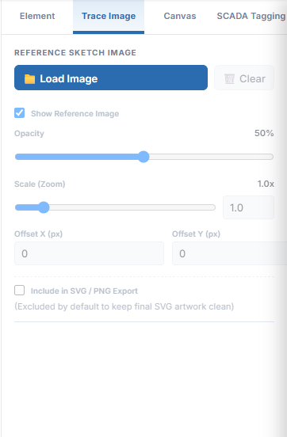
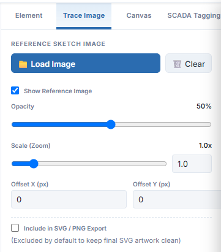
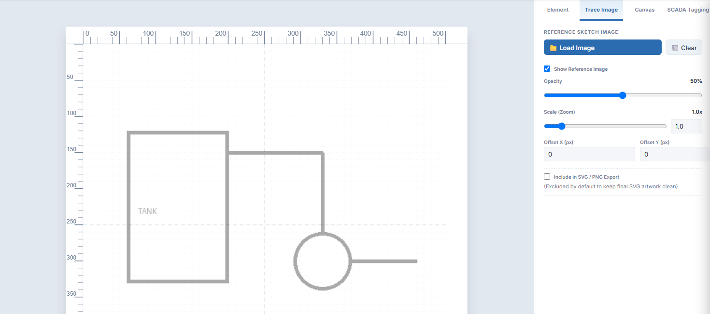
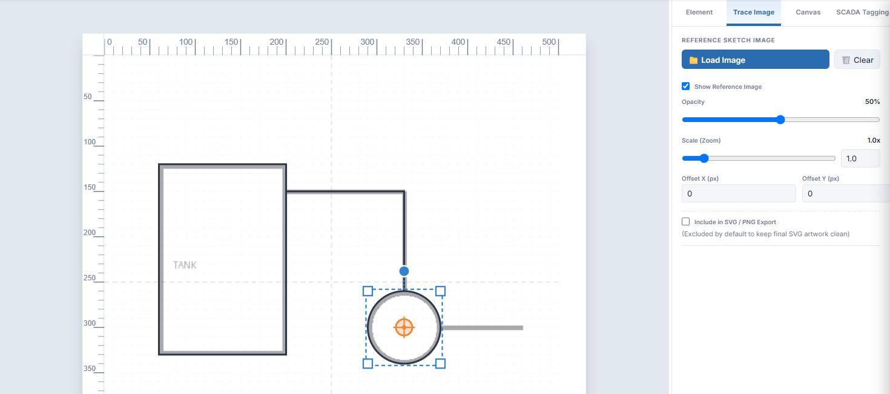
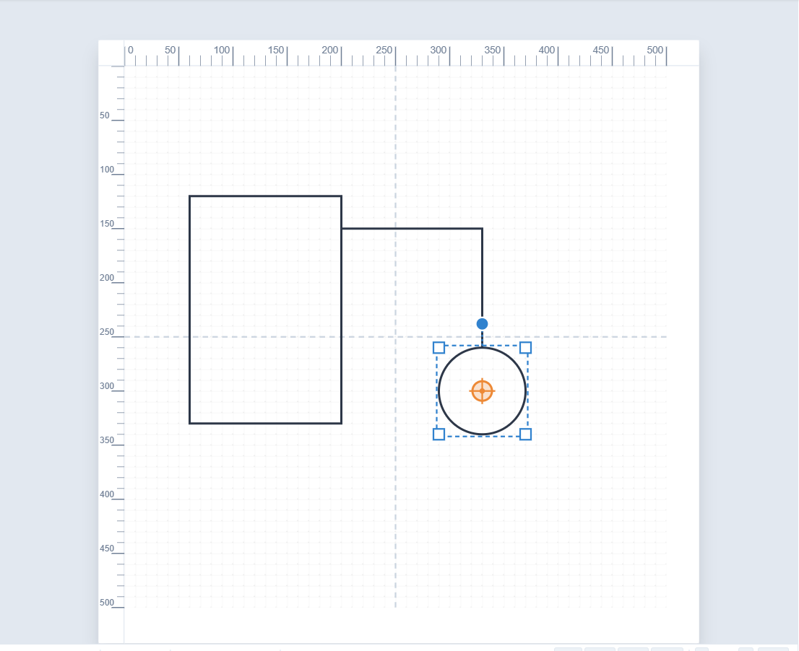

SimpleVG › Tutorial › Chapter 9
Often you start from something that already exists: a hand sketch of a plant layout, a scanned P&ID, a logo or a photo of a machine. SimpleVG lets you put that picture on a background layer and draw over it.
Click the Trace Image tab at the top of the Inspector.

The controls are greyed out until you load a picture. Click Load Image and choose a PNG, JPEG, SVG, WEBP or GIF file.
As soon as a picture is loaded, the controls come to life. You can now show or hide the reference, fade it, scale it and move it. We look at each of them in the next part.

The picture appears on its own layer, underneath everything you draw. It does not get in the way: clicks and drags pass straight through it, so you cannot select or move it by accident.

The controls on the tab let you set it up:
Now draw over the picture with the shapes from the earlier chapters. Here a Rectangle follows the tank, a Polyline follows the pipe and a Circle follows the pump. For curved outlines, the Bézier Pen is the best tool.

Untick Show Reference Image to see your tracing by itself.

What remains is plain vector shapes. Colour them, group them, give them tags, and save the SVG as usual. The sketch is left out of the saved file unless you tick the export option.
In the last chapter we give shapes the names and tags a SCADA system can use.